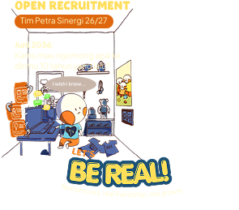
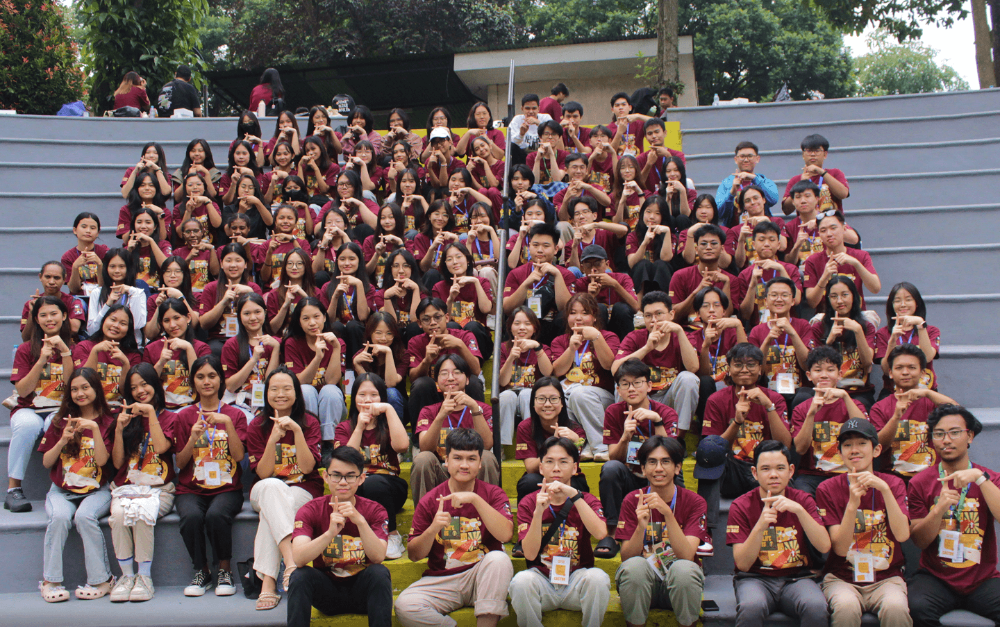

Welcome! We are
Tim Petra Sinergi
Penyelenggara program pembinaan mahasiswa UK Petra dengan visi mengajak mahasiswa baru mulai memikirkan hidup yang berhasil dan bermakna.

Welcome! We are
Penyelenggara program pembinaan mahasiswa UK Petra dengan visi mengajak mahasiswa baru mulai memikirkan hidup yang berhasil dan bermakna.

Mengajak mahasiswa baru mulai memikirkan hidup yang berhasil dan bermakna.
Astor belajar hidup berpusat pada Kristus melalui pemahaman yang benar akan Tuhan dan diri, sehingga dapat membagikan Injil di kelompok LEG dan mengembangkan diri sesuai tujuan hidup.